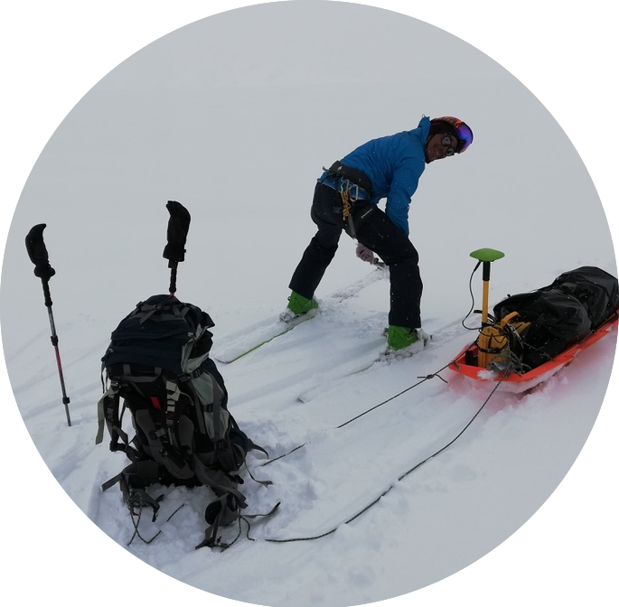

About me
Masahiro Minowa,
cv
I'm a glaciologist working at
Cryosphere Research Lab. in Nagoya University, Japan. I am trying to understand how glaciers are losing their mass under the current climate.
Local Address
Graduate School of Environmental Studies, Nagoya University, Nagoya, Japan